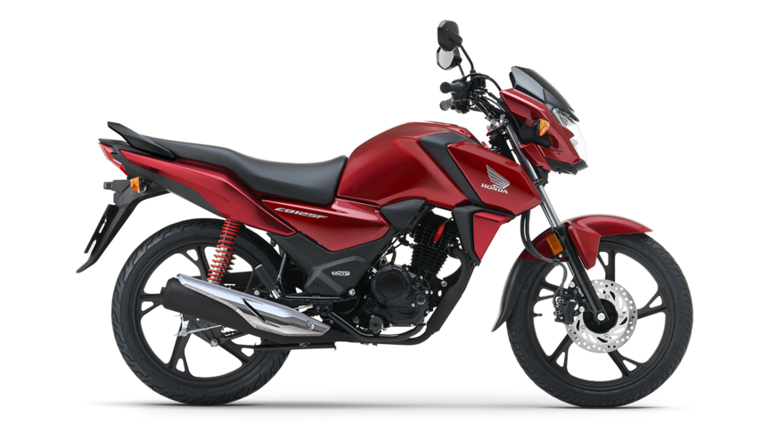

Leonardo Pesci
Sono nato e vivo a Roma, sono diplomato al liceo scientifico-matematico e attualmente studio statistica gestionale alla Sapienza. Cerco sempre di tenermi impegnato e di portare parallelemente allo studio e al lavoro i miei interessi e le mie passioni.
I miei interessi sono:
- Violino
- Palestra
- Programmazione
- Moto

Da un anno mi sono appassionato alla programmazione web, il 18 marzo ho iniziato un corso con Digitazon.